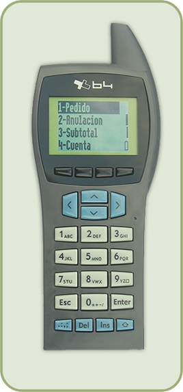

Inventários, Análises de Preços, Vendas, optimize e actualize o seu negócio.
175x70x25 mm, 230 g
Características:
LCD gráfico 100x64
Bateria NI-MH de 650mAh
Emulação 5250
ActiveX e DLL para Windows
Leitor laser de códigos de barras
Compativel com os seguintes códigos:
EAN, UPC, Code 128, Code 93, Codabar, Code 39, Interleaved 2 of 5, Standard 2 of 5
Dados técnicos:
512 Kb RAM, 64 Kb ROM, 512 Kb Flash
Compilador de linguagem C
Funcionamento on-line ou off-line
Distância de comunicação até 150 metros
Distâncias superiores usando antenas repetidoras
Respeita as normas ETS 300-220
Integração fácil em aplicativos
através de:
ActiveX e DLL para Windows
Emulação de terminal
Ligação directa a varios softwares de Gestão Comercial
Ligação directa a vários softwares
para Restauração
Aplicações:
Recolha de dados em tempo real
Controle de stocks
Expedições e entregas
Recolhas e empacotamento
Gestão de produção
Verificação de componentes
Processamento de materiais
Envios
Seguimento de volumes
Informação clinica de pacientes
Lojas com sistema de auto-registo
Bares e restaurantes
Pesagens
Bilhetes e cartões de acesso por código de barras |  |